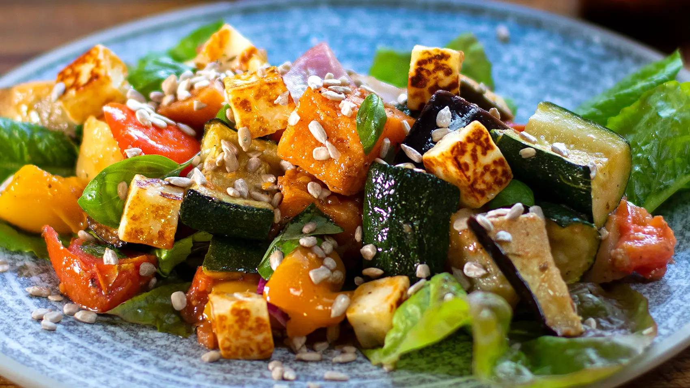

Roast Vegetable Salad

Description
Who says salads have to be raw? There’s something delicious about a roasted vegetable salad in any season!
Because all vegetables cook at different rates, there’s a little skill and timing involved, but don’t worry it’s very easy. You first start with the hardest vegetables, the potatoes and sweet potato. The potato is still harder than the sweet potato, so you want to cut the pieces smaller, this way they finish cooking at the same time. Once these are almost cooked, you then add the softer vegetables. Finally, the tomatoes. Remember, it’s a salad, not a roast, therefore you don’t want to overcook the vegetables, you simply want to extract more flavour from them but still retain their integrity. Once cooked, simply toss the cooked vegetables (still warm) into your favourite dressing. I added mine if that helps.
For another level, try frying some halloumi cheese pieces, it makes a world of difference and turns this salad into a complete meal.
Ingredients
- 2 x waxy potatoes
- 1 x sweet potato
- 1 x red onion
- 2 bell peppers, mixed red, yellow or green
- 2 x Zucchinis
- A few lettuce leaves of your choice
- 1 tbsp sunflower seeds
- 8oz - 230g Halloumi cheese
For the dressing
- ⅓ cup Balsamic vinegar
- 1 tsp Dijon mustard
- 1 garlic clove
- 1 tsp dried oregano
- ½ cup olive oil
Instructions
- Preheat your oven to 350°F – 180°C
- It’s best to first start with the hardest vegetables. Peel the potatoes and sweet potato. Cut into cubes “dice” the sweet potato into chunky pieces, and the potato smaller so they finish cooking around the same time. Place in a mixing bowl, drizzle olive oil, add salt and pepper. Toss veges until evenly coated and place on a parchment paper lined baking tray. Bake in oven for 20 min at 350°F – 180°C
- Meanwhile dice the zucchinis in chunky pieces as they cook fast. No need to peel them. Add them to the same mixing bowl. Now trim the bell peppers and cut into squares. Place in mixing bowl. Trim and dice the eggplant, you can dice those a little smaller than the zucchinis if you prefer. Drizzle olive oil, the salt and pepper and toss vegetables in bowl.
-
Once the potatoes have cooked 20 minutes, remove from oven and place the softer vegetables on top. Spread them out evenly. Return tray to oven for another 10 minutes.
-
Meanwhile dice the tomatoes, again place in the same mixing bowl with olive oil, salt and pepper and toss well. Remove tray from oven and scatter the tomatoes on top. Return to oven for another 5 minutes. Then leave to cool.
-
Meanwhile for the dressing, add balsamic vinegar, minced garlic, dried oregano, Dijon mustard and olive oil. Mix well using a whisk.
-
Once the vegetables have cooled down but still warm, add to the dressing and mix well until each piece is nicely coated. To plate up, place a few washed lettuce leaves on the bottom of a serving plate and spoon the vegetables on top. You can take it a couple more steps…
-
For the halloumi cheese, place a non-stick frying pan on high heat. Cut cheese into cubes and place in pan. Toss a few times until the cheese browns on each side. Be careful as when it starts to brown it can burn fast.
-
For the halloumi cheese, place a non-stick frying pan on high heat. Cut cheese into cubes and place in pan. Toss a few times until the cheese browns on each side. Be careful as when it starts to brown it can burn fast.